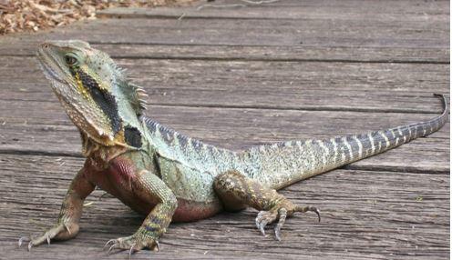
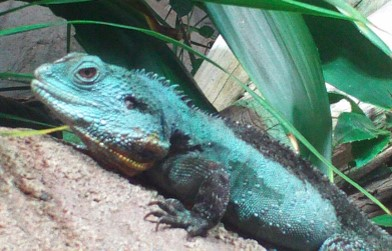
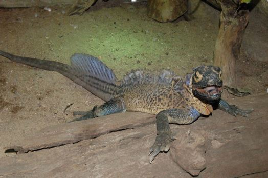
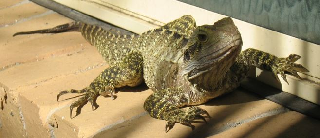

The AUSTRALIAN WATER DRAGON, Intellagama lesueurii, in CAPTIVITY
- Introduction
- Taxonomy
- Natural History
- Housing Requirements
- General Husbandry
- Feeding requirements
- Handling and Transport
- Health Requirements
- Behaviour
- Breeding
- Artificial Rearing
- References and Bibliography
- Glossary
3 Natural History
Water Dragons, are appropriately named as they possess excellent adaptations to living in aquatic environments; a laterally compressed tail provides adequate forward propulsion in the water (Greer 1990:18). Water Dragons can also remain underwater for over an hour at a time (Wilson & Knowles 1992:54), remaining motionless to avoid detection by predators. Water Dragons are just as adept in the trees and on land as they are in the water. Long, strong claws allow these lizards to grip branches, which they frequent to find food, bask and avoid predation (Ehmann 1992:134). The preferred arboreal habitat of the Australian Water Dragon is near or above the water, which provides an escape when startled (Goulding and Green 2006). Water Dragons are often observed basking on sunlit rocks, logs or substrate near water. On the ground these dragons can run in a bipedal fashion at considerable speed to avoid danger or pursue prey (Goulding and Green 2006:7).
The Eastern Water Dragon, I. l. lesureurii, is most likely one of the most successful large reptiles to inhabit urban areas as large populations can be seen living in close proximity to human environments such as the north shore and beaches suburbs of Sydney and the Tweed heads region of NSW (Hobden 2003).
3.1 Morphometrics
The Australian Water Dragon can be identified by a distinctively deep angular head and nuchal crest with spinose scales, that extend across the dorsal surface and down the tail (Worrell 1966:75). Keeled spinose scales are also present across the lateral sides, unevenly distributed amongst regular scales (Cogger 2000:344-6). The jowls are large and the tympanum is exposed and almost in equal size to the eye. The dorsal ridge and tail is laterally compressed and the limbs are strong and robust with particularly long toes on the hind legs (Wilson & Knowles 1992:54, Ehmann 1992:134). The tail is laterally compressed and is capable of regeneration when lost, furthermore, regenerated tails can also grow back when severed (Rankin in Anonymous 1976:22).

Image 2. Eastern Water Dragon, I. l. lesueurii. Photo: Chris Hosking
Colouration differs between the subspecies, the Eastern Water Dragon, P. l. lesueurii, has a grey to brownish grey colour above with patterns of black stripes along the dorsal ridge as well as down the tail (Worrell 1966:1975). There is also a strip horizontally from the eye back over the tympanum and extending down the neck (Goulding and Greer 2006:3). The limbs are mostly black with spots and stripes of grey and the tail is patterned with grey and black stripes (see image 3). The ventral surface is yellowish-brown, mature males have a bright red chest and upper belly (Griffiths 2006:61-2, Wilson & Knowles 1992:54).
The Gippsland Water Dragon, P. l. howittii, is identical in morphology apart from slightly smaller spinose scales (Worrell 1966:75) but differs in colouration and patterning (see Image 4). Black stripes are present against a olive-green to brown colour from above. Most individuals have a coppery-blue-green colouration. Mature males have streaks of yellow and blue around the neck and throat (Jenkins & Bartell 1980).

Image 3. Gippsland Water Dragon P. l. howittii. Photo: Chris Hosking © Australian Museum.
3.1.1 Mass And Basic Body Measurements
The Australian Water Dragon is Australia’s largest agamid lizard (Greer 1990:18) reaching a total length of 950mm and snout to vent length of 250mm (Ehmann 1992:134). Lengths and weights obtained by Daly (1992:37) of two males (both with noticeable tail loss) south of Sydney are presented in Table 1.
| Measurements |
Specimen 1 |
Specimen 2 |
Snout to Vent Length |
235mm |
220mm |
Total Length |
670mm |
710mm |
Weight |
580g |
510g |
Table 1. Weights and measurements of two wild I.l.lesueurii recorded by Daly (1992).
Captive individuals are prone to weight gain so are likely to be heavier than wild specimens. Weights and measurements of two captive P. l. lesueurii recorded by the author are presented in Table 2.
| Measurements |
Specimen 1 |
Specimen 2 |
Snout to Vent Length |
2220mm |
220mm |
Total Length |
710mm |
700mm |
Head length (snout to last nuchal spinose scale) |
85mm |
88mm |
Head width (tympanum to tympanum) |
60mm |
70mm |
Hind limb length (vent to longest toe.) |
180mm |
180mm |
Weight |
700g |
605g |
Table 2. Weights and measurements of two captive I.l.lesueurii recorded by Hosking (2009).
Maximum sizes were obtained by Thompson (1993); largest male was 304mm SVL and one male was heavier than 1000g. The largest female was 230mm SVL and the heaviest was 490g.
3.1.2 Sexual Dimorphism
Male P. l. lesueurii can be identified by the scarlet colouration on the chest, P. l. howittii have bands of yellow and blue on the throat. Males of both subspecies have noticeably wider heads and more prominent jaws than females (Wilson & Knowles 1992:54). Sex can be determined by approximately six months of age as males will develop the respective scarlet red chest and banded throat colouration in each subspecies (Wilson & Knowles 1992:54, Jenkins & Bartell 1980:91). By the age of one year the sex of the water dragons should be clear. Since sexual dimorphism is so obvious in this species sexing via probing is unnecessary and not recommended.
3.1.3 Distinguishing Features
Australian Water Dragons can be distinguished from other large Australian agamids from a number of key features. Bearded Dragons, Pogona sp.Chlamydosaurus kingii, has an obvious frill, but can also be distinguished from Water Dragons as C. Kingii is not as laterally compressed (Wilson & Knowles 1992:30-1) Forest Dragons Hypsilurus spp. have much larger spinose scales relative to body size and do not reach as large a size as Water Dragons (Wilson & Knowles 1992:52-3).
Where kept in collections with other non-Australian reptiles there are other species that it may be confused with. Green Water Dragon, Physignathus cocincinus which has a emerald colouration and lacks the banding seen in the Australian Water Dragon (De Vosjoli 1992). The world’s largest agamid; the Sail-finned Dragon Hydrosaurus pustulatus (see Image 5), has a dorsal sail along its back and anterior third of its tail. This species also has a shiny sapphire-like colouration on the dorsal surfaces, tail and limbs (De Vosjoli 1992, Knowles and Vye 1991).

Image 4. Sail-finned Dragon Hydrosaurus pustulatus. Photo: Steve Vogel
3.2 Distribution and Habitat
Australian Water Dragons are found in Eastern Australia as well as New Guinea (Anonymous 2008. Cogger 2000. Worrell 1966:74). The Eastern subspecies, P. l. lesueurii, occurs along the east coast of Australia from Cooktown in the north down to the New South Wales south coast (approximately at Kangaroo Valley) where it is replaced with the Gippsland subspecies (P. l. howittii) which is distributed as far south and into the Gippsland region of eastern Victoria (see Figure 1). There is also at least one anthropologically introduced feral population found in the Mount Lofty Ranges near Adelaide in South Australia (Wilson & Swan 2004:326).

Figure 1. The Australian distribution of the two subspecies of Australian Water Dragon. Image by Chris Hosking based on Ehmann (1992:134).
The habitats available to this species differ greatly over the species distribution from tropical rainforest in the north to alpine streams in the south. Flowing water with ample tree cover and basking sites appear to be the key to habitat preference for this species. Water dragons will be found in built-up urban areas provided that the above conditions can be found and water quality is fair (Goulding and Green 2006).
3.3 Conservation Status
3.3.1 In the Wild
Life expectancy in the wild has not been formerly researched. A tag and release project is an area for future study Cogger (2009 pers. comm. 27th May). Peter Harlow (2009 pers. comm. 23rd July) has conducted unpublished research on the free-living wild population of Intellagama l. lesueurii on the grounds of Taronga Zoo which indicates that the wild lifespan of the species is at least 16 years.
3.4.2 In Captivity
Water Dragons are relatively long -lived reptiles with specimens recorded easily reaching 14 years (Hay 1972). Captive records of a single female kept by Harlow and Harlow (1997) indicate that the maximum captive age for this species can be as long as 25 or even 28 years. According to Griffiths (2006:13) one male in captivity lived 40 years.
3.4.3 Techniques Used to Determine Age in Adults
This is another area for further study (Cogger 2009 Per Comm.). A possible future research project would involve studying a wild population over several years, involving tagging individuals and taking photographs and measurements to establish morphometric trends. However according to Shea (2009, pers. comm. 16th July) aging of any ageing of any reptile based on size is difficult and may not be achievable, as growth rates are extremely variable and depend on temperature and food intake.

Image 5. Eastern Water Dragon, P. l. lesueurii. Photo: Roger Graf.